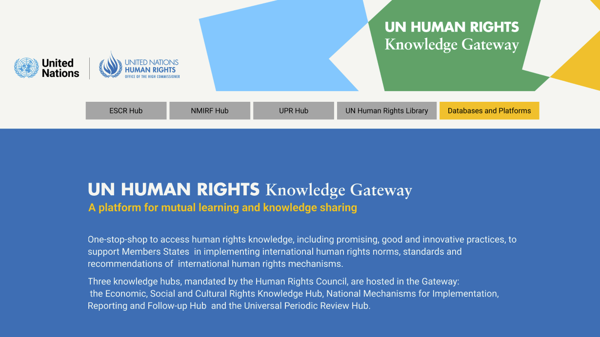
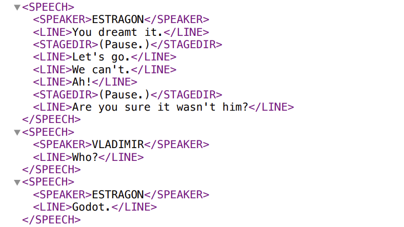
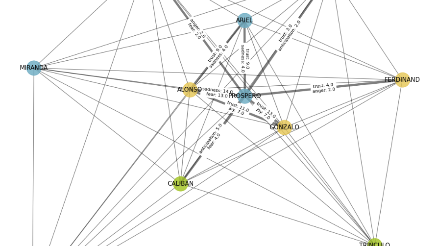
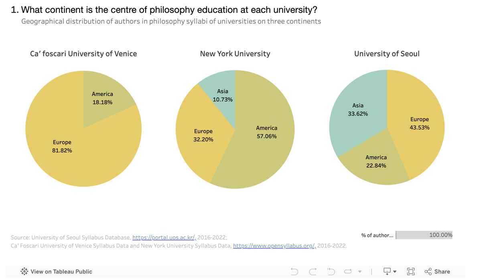
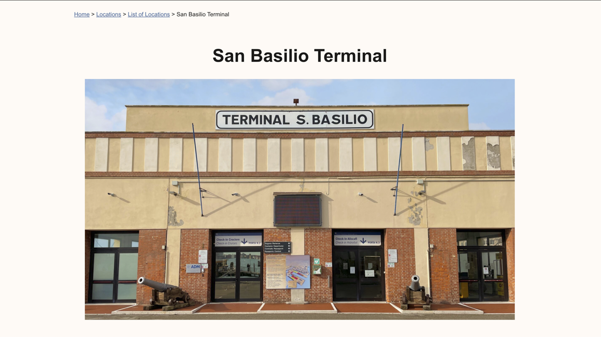
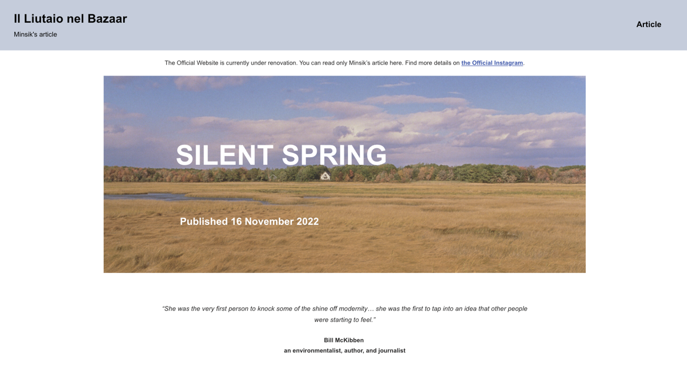
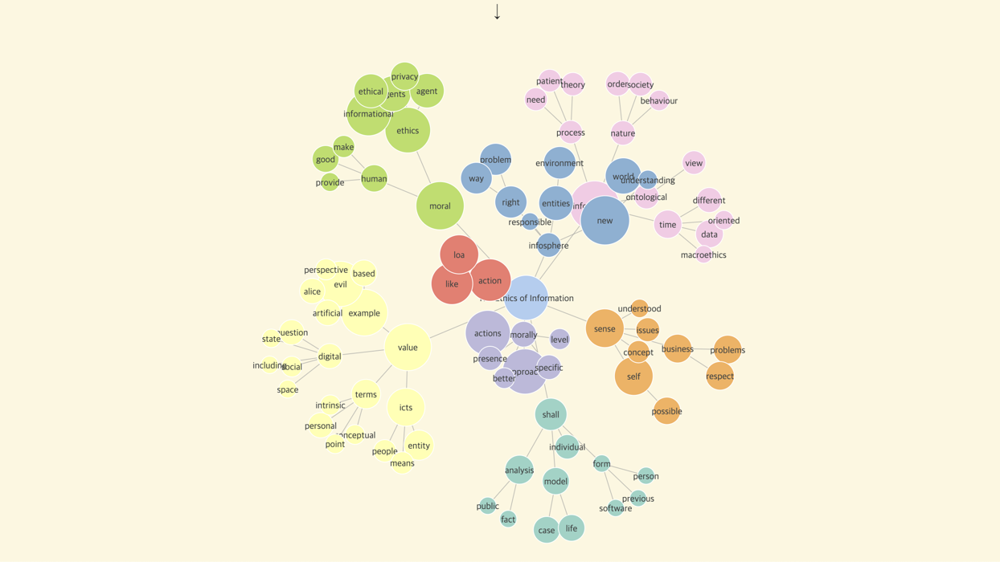
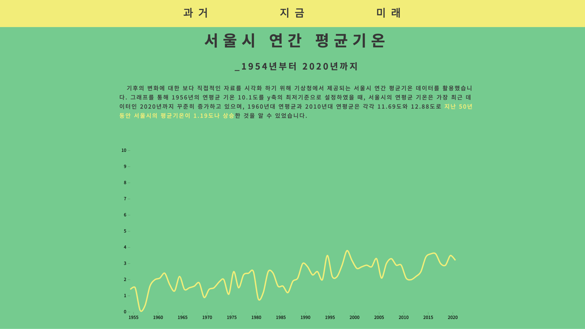

UN Human Rights Knowledge Gateway
UN Human Rights Office · Sep 2025
Designed the landing page based on UN web accessibility and OHCHR branding guildlines.
UI/UX Design
I use digital technologies as an engine for open and ethical knowledge sharing.
Designed the landing page based on UN web accessibility and OHCHR branding guildlines.
UI/UX Design
A study on how pauses regulate emotional balance in Waiting for Godot using ML model and emotion classification.
Machine Learning
Used Python and XML to map character emotions and relationships through social network analysis.
Data Analysis
Using digital humanities to access an environmental philosopher's notebook. Used IIIF and XML to connect ideas across sources.
Web Development
Uncovering teaching patterns across three continents. Visualized university data to extract insights into curriculum, authorship, and topic trends.
Data Analysis
Developed a WordPress showcasing how public art fosters urban regeneration and social sustainability in Venice's specific district.
UI/UX Design
An interactive web article about how Rachel Carson and Silent Spring sparked a paradigm shift between humans and nature in the 1960s.
Web Content
Mapped an environmental philosopher's life through key places, events, and concepts using LOD, metadata, and RDF.
Linked Open Data
Analyzed The Ethics of Information by Luciano Floridi using text data to visualize key knowledge concepts and connections.
Data Analysis
Tracing real-time temperature patterns. Visualized climate data to address the UN's 13th Sustainable Development Goal.
Data Analysis
UN HUMAN RIGHTS Knowledge Gateway is a platform for mutual learning and knowledge sharing. This is a knowledge hub accessing human rights knowledge, including promising, good and innovative practices, to support Members States in implementing international human rights norms, standards and recommendations of international human rights mechanisms.
In this project, I designed the UI/UX of the landing page in compliance with UN web accessibility and OHCHR branding guidelines.

This is a Master’s thesis for Digital and Public Humanities at Ca’ Foscari University, where I utilized the ELECTRA deep learning model to quantify the emotional and structural role of pauses in Samuel Beckett’s Waiting for Godot.
My research established a data-driven methodology to analyze how non-linguistic elements regulate emotional rhythm, at the intersection of computational linguistics and literary theory.

As an academic project for 'An Introduction to Computational Social Science' class, I analyzed Shakespeare’s The Tempest using Python and XML-based text processing.
By leveraging emotion lexicons, I visualized complex character relationships and quantified the play’s shifting emotional and political dynamics. This study offered a data-driven perspective on the structural evolution of classical narratives.

As an academic project for 'Modelling and Visualizing Textual Data' class, I developed a digital scholarly edition of Aldo Leopold’s notebooks by implementing IIIF and XML.
In this project, I transformed archival manuscripts into an interactive platform, offering a sophisticated way to navigate and visualize complex textual relationships.

As an academic project for 'Information Visualization, Data Science, and Social Media Analytics' class, I investigated how geographical background influences global education by analyzing university data from New York, Seoul, and Venice (2016–2022).
With Tableau, I visualized complex teaching patterns to extract quantitative insights into curriculum composition, authorship demographics, and shifting topic trends across three continents. This study uncovered the hidden relationship between regional contexts and academic focus, providing a data-driven narrative on the Geographical features in higher education.

As an academic team project for 'Web and User Experience Design'class, we developed "ArtRe," a WordPress-based platform dedicated to public art re-qualification in Venice.
In this team project, we showcased how public artistic interventions foster urban regeneration and social sustainability. I took part in Video (recording, editing), WordPress Page Layout (about, location, contact), UI/UX design.

'Il Liutaio nel Bazaar' is a digital public history project run by Ca'foscari University, aimed at producing and publishing historical content for online audiences.
In this project, I worked on an interactive web article about Rachel Carson, who contributed to the emergence of environmental multilateralism as a female scientist. Even though the Official Website is currently being renovated, I built my personal WordPress site to re-upload my article.

As a personal research project, I designed and implemented a Linked Open Data (LOD) model to map environmental philosopher Arne Naess’s life through key locations, events, and concepts.
By integrating RDF and metadata schema design with E/R modelling, I structured complex biographical data into a navigable digital network.

As an independent team project, we computationally analyzed Luciano Floridi's The Ethics of Information by mapping conceptual networks using TextRank and Louvain algorithms.
I utilized D3.js to visualize node relationships based on frequency and community, implementing an interactive interface to explore the contextual meaning of key philosophical terms.

As a team project for the 'DSC Korea Solution Challenge 2021,' we developed 'E-day' to address UN Sustainable Development Goal 13 (Climate Action) through real-time data visualization. The project was structured to transform abstract climate data into intuitive visual insights, utilizing a specialized technical stack to bridge the gap between scientific data and public awareness.
Just as visual charts made the invisible COVID-19 virus understandable, I leveraged D3.js and frontend technologies to visualize rising temperatures and greenhouse gases, providing intuitive data-driven insights to persuade the public on the urgency of climate protection.
I spend most of my time in mountains, libraries and lakes, creating my digital archives of these moments.